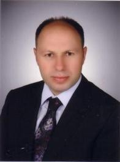

Cemil Hakyemez

Prof. Dr. Cemil Hakyemez
Özgeçmiş
Doğum Tarihi : 1971
Öğrenim Durumu :
Eserleri ve danışmanlıkları
Gaybet İnancı ve Şiilikteki Yeri
Cemil Hakyemez · Ankara Ü. SBE.
Bişr b. el-Mu'temir ve Mu'tezile'nin Bağdat Ekolünün Doğuşu
Cemil Hakyemez · 1998 · Ankara Ü. SBE.
Şîa'da Gaybet İnancı ve Gâib On İkinci İmam
Cemil Hakyemez · 2009 · İSAM
İSLAMOFOBİNİN İSLÂM ARAŞTIRMALARI ÜZERİNDEKİ ETKİSİ
Cemil Hakyemez · 2012 · Ahmet Yesevî Uluslar Arası Türk-Kazak Üniversitesi,
İlgili haberler
Yeni Dekan: Cemil HAKYEMEZ
Prof. Dr. Cemil HAKYEMEZ hocamız Trabzon Üniversitesi İlahiyat Fakültesi Dekanı olarak 14.06.2025 tarihi itibarıyla göreve başlamıştır. Hocamızı tebrik eder, başarılarının devamını dileriz.
Yer Değişimi: Prof. Dr. Cemil HAKYEMEZ
Hitit Üniversitesi İlahiyat Fakültesi öğretim üyesi Prof. Dr. Cemil Hakyemez hocamız, 07.04.2025 tarihi itibarıyla Trabzon Üniversitesi İlahiyat Fakültesine atanmıştır. Görevine başlayan hocamıza yeni görev yerinde sağlık, huzur ve başarılarılarının devamını d
Yeni Doktor Ahmet ATEŞYÜREK
Prof. Dr. Cemil Hakyemez danışmanlığında Ahmet ATEŞYÜREK tarafından hazırlanan "Ebû Mansur el-Maturîdî'nin Fikrî Arka Planı" adlı Doktora çalışması 13.11.2019 tarihinde savunularak başarılı olmuştur. Hitit Üniversitesi İlahiyat Fakültesi İslam Mezhepleri Tarih
8 Nisan 2010 Yeni Doçent: Cemil HAKYEMEZ
Çorum Hitit Üniversitesi İlahiyat Fakültesi'nden Cemil Hakyemez, 8 Nisan 2010 tarihinde Doçent unvanı almaya hak kazanmıştır. Prof. Dr. Sönmez Kutlu, Prof. Dr. Mazlum Uyar, Prof. Dr. Sayın Dalkıran, Prof. Dr. Saffet Sarıkaya Prof. Dr. A. Bülent Ünal'dan oluşan